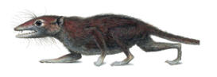

Seriously. When you cut through all the dental details, it all comes down to, "It has teeth more like a placental than a marsupial."
Seriously. When you cut through all the dental details, it all comes down to, "It has teeth more like a placental than a marsupial."| Feature Article - November 2011 |
| by Do-While Jones |
A new fossil, Juramaia sinensis, "fills an important gap in the fossil record of early mammal evolution." Or, so they say.

Mammals are animals that have mammary glands, which provide milk to their infant offspring. There are three kinds of mammals. We in the Northern Hemisphere are most familiar with placental mammals, like cows, cats, and people. Placental mammals develop in the womb and are born nearly fully developed. A fawn, for example, can stand up on its own shortly after it is born.
Marsupials are more common in the Southern Hemisphere, although there are a few (opossums, for example) in the Northern Hemisphere. They are born only partially developed, and have to crawl into their mother's pouch to complete their development. The kangaroo is probably the best known marsupial.
Rarer still are the monotremes, like the platypus and spiny anteaters, which lay eggs.
Evolutionists believe that all mammals had a common ancestor because the evolution of mammary glands is so fantastically improbable that it only could have happened once. Therefore, monotremes, marsupials, and placental mammals must have evolved from the very first (unknown) mammalian ancestor.
If we may be permitted to digress for one paragraph, we would like to make this observation: Sharks and dolphins look enough alike that the sight of a gray dorsal fin in the water can be cause for concern to a surfer. Despite their physical similarity, evolutionists do not believe they are closely related because they think it would be more unlikely for a shark to evolve mammary glands and lungs than it would be for a land animal to adapt to an aquatic life. It is simply a matter of opinion regarding which ridiculous, speculative sequence of events is least improbable and therefore must be true.
But let's get back to the topic at hand. Evolutionists believe that marsupial and placental mammals both evolved from some unknown common ancestor some time in the distant past. They don't know when that unknown common ancestor lived, but they think they can figure it out from fossils and DNA comparisons. When they tried to do this in the past, they got contradictory ages.
The reason they fail is that their assumptions are wrong. The ages of the fossils are based on incorrect assumptions about the ages of rocks. The DNA comparisons are based on incorrect assumptions about mutation rates, which came from the incorrect assumption that there actually was a common ancestor.
But now, evolutionists think they have found a fossil old enough to confirm their prejudice.
|
"Understanding the beginning point of placentals is a crucial issue in the study of all mammalian evolution," says Luo. The date of an evolutionary divergence--when an ancestor species splits into two descendant lineages--is among the most important pieces of information an evolutionary scientist can have. Modern molecular studies, such as DNA-based methods, can calculate the timing of evolution by a "molecular clock." But the molecular clock needs to be cross-checked and tested by the fossil record. Prior to the discovery of Juramaia, the divergence point of eutherians [living and extinct placental mammals] from metatherians [living and extinct marsupials] posed a quandary for evolutionary historians: DNA evidence suggested that eutherians should have shown up earlier in the fossil record--around 160 million years ago. Yet, the oldest known eutherian, was Eomaia, dated to 125 million years ago. The discovery of Juramaia gives much earlier fossil evidence to corroborate the DNA findings, filling an important gap in the fossil record of early mammal evolution and helping to establish a new milestone of evolutionary history. 1 Living mammals are split into three subgroups: egg-laying monotremes, pouched marsupials, and placental mammals, which includes everything from humans to bats to whales. Determining when marsupials and placentals diverged has been problematic: Fossil discoveries point to about 125 million years ago, whereas genetic differences among living mammals suggest that the split happened even earlier. Now the discovery of a partial skeleton of a small, shrewlike mammal, described online 24 August in Nature, pushes back the date of the divergence to 160 million years ago. 2 Although the exact evolutionary path from the early eutherian mammals has yet to be traced, Luo noted that "Juramaia, from 160 million years ago, is either a great-great-aunt or a great-grandmother of all placental mammals that are thriving today." 3 |
Why does the molecular clock need to be "cross-checked and tested?" If it is based on a reliable scientific principle, you should be able to depend upon what it says regardless of your prejudice; but evolutionists only believe the molecular clock when it agrees with what they already believe, and they already believe the fossil record.
How, you might ask, do they know that Juramaia was not a marsupial? You might be amazed by the answer.
|
Juramaia probably ate insects and was a skilled climber. Based on the arrangement of its teeth and on characteristics of its arms and wrists, Juramaia belonged to a group of animals called eutherians, a lineage that includes placentals and their forebears, says lead author Zhe-Xi Luo of the Carnegie Museum of Natural History in Pittsburgh, Pennsylvania. 4 |
In Luo's words,
|
Diagnosis. I5-C1-P5-M3/I4-C1-P5-M3 (Fig. 2), with identical formula as the eutherian Eomaia and typical count of five premolars and three molars for Cretaceous eutherians. Molars tribosphenic, with derived eutherian features of distinctive paraconule, incipient metaconule (M2 only), long preprotocrista past the paracone and long postprotocrista past the metacone. The postmetacrista and the extended postprotocrista of an upper molar form two separate ranks of shearing crests that pass the prevallid crest (paracristid) of the succeeding lower molar (Fig. 3). [and several more pages of stuff like this about teeth!] 5 |
Well, how can you argue with that! Seriously. When you cut through all the dental details, it all comes down to, "It has teeth more like a placental than a marsupial."
Teeth can lead one terribly astray, as the whole Nebraska Man fiasco 6 should have make clear.
| Quick links to | |||
|---|---|---|---|
| Science Against Evolution Home Page |
Back issues of Disclosure (our newsletter) |
Web Site of the Month |
Topical Index |
Footnotes:
1
Carnegie Museum of Natural History , 24 August, 2011, "Discovery of a 160-million-year-old fossil represents a new milestone in early mammal evolution",
http://www.eurekalert.org/pub_releases/2011-08/cmon-doa081911.php
2
Science, 2 September 2011, "'Jurassic Mother' Found in China", pp. 1205-1206
http://www.sciencemag.org/content/333/6047/1205.2.full
3
Katherine Harmon, Scientific American, August 24, 2011, "Jurassic Mammal Moves Back Marsupial Divergence",
http://blogs.scientificamerican.com/observations/2011/08/24/jurassic-mammal-moves-back-marsupial-divergence/
4
Science, 2 September 2011, "'Jurassic Mother' Found in China", pp. 1205-1206,
http://www.sciencemag.org/content/333/6047/1205.2.full
5
Luo, et al., Nature, 25 August 2011, "A Jurassic eutherian mammal and divergence of marsupials and placentals", pages 442-445,
http://www.nature.com/nature/journal/v476/n7361/full/nature10291.html
6
Disclosure, April 2004, "Nebraska Man Sues for Re-instatement",
http://scienceagainstevolution.org/v8i7n.htm